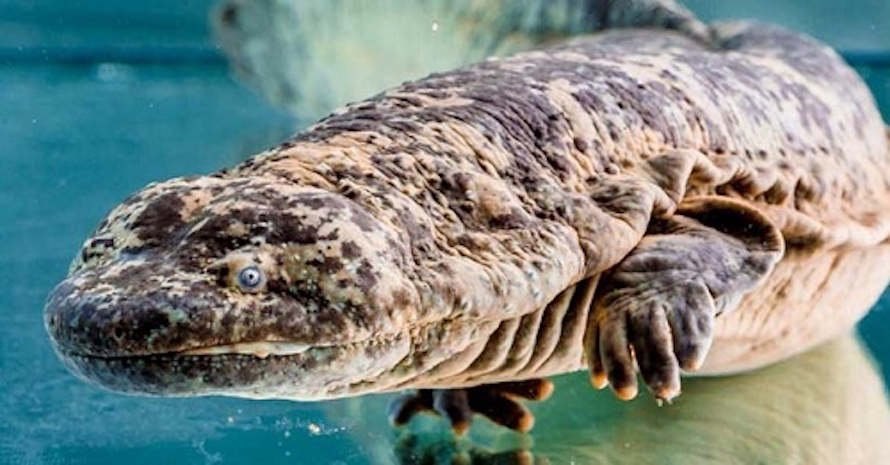
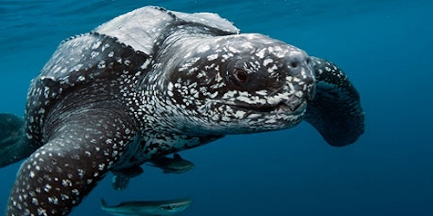
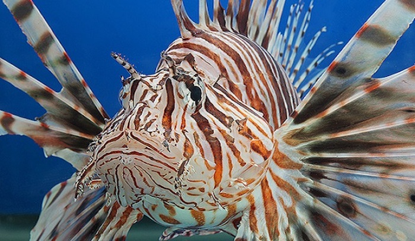
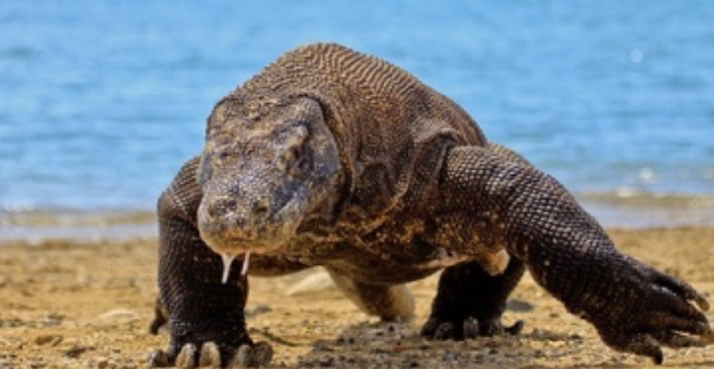

ANIMAL WEIRD
Welcome to Animal Weird - See the animals in Asia!

Chinese Giant Salamander – Andrias davidianus
- Scientific Name: Andrias davidianus
- Conservation Status: Endangered
- The Chinese giant salamander is the largest living amphibian in the world. They can reach lengths of up to 5.9 feet or 1.8 meters.
- These salamanders produce sounds like a baby’s cry therefore it is commonly called baby fish.
- Chinese giant salamanders eat fish, salamanders, aquatic insects, crayfish, snakes, worms, crabs and shrimps.
- Destruction of habitat due to construction of dams, pollution, industrial, agricultural and urban development has exacerbated its decline.

Leatherback Sea Turtle
- Scientific Name: Galagidae
- Conservation Status: Endangered
- Leatherback turtles have a circumpolar distribution. They nest in tropical beaches and migrate to temperate and sub-polar latitudes. They have the largest distribution of any turtle species.
- Its front flippers are longer than that of other turtles, they lack scales and do not have claws.
- Leatherbacks are carnivores. Its main diet consists of jellyfish and salp. They also eat crustaceans, fish, sea urchins, snails and zooplankton.
- These species can dive up to 4,200 feet (1,280 meters) deep and remain submerged for up to 85 minutes.

Red Lionfish
- Scientific Name: Pterois volitans
- Conservation Status: Least Concern
- The red lionfish is a distinctive member of the scorpiofish family known for their camouflage. However lionfish do not share this characteristic. It has an attractive coloration which warns predators of its venom.
- In order to hunt lionfish blow water at its prey to disorient it. It corrals its prey by spreading its pectoral fins and swallows it in a single motion.Lionfish wounds are treated by immersing the body area in hot water for 30 to 90 minutes. Venom is neutralized by heat.

Komodo Dragon
- Scientific Name: Varanus komodoensis
- Conservation Status: Vulneralble
- Komodo dragons are native to the archipelago of Indonesia to the islands of Komodo, Flores, Rinca, Padar and Gili Motang.
- The Komodo dragon is the largest living lizard species. They dominate the ecosystem where they live because of their size.
- These animals are ecotherms meaning that they heat their bodies absorbing energy from the sun and cool themselves under shade or burrowing.
- They build shelters by digging holes of up to 10 feet or 3 meters. In these shelters they rest during the hottest part of the day.
Go Top！！